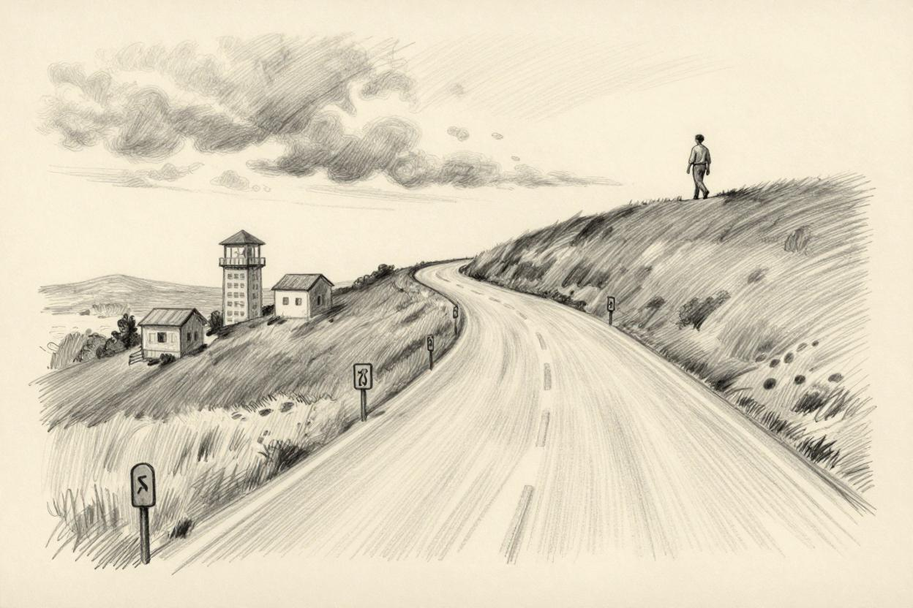
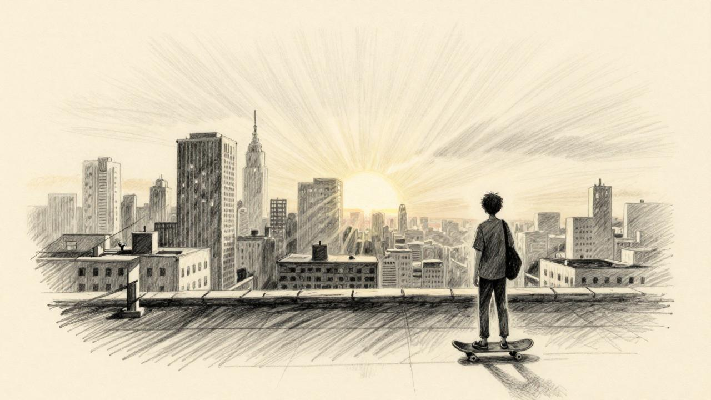

Motion: ON
Life Flip
one career, one trick at a time
begin
↓
The Line
Before tech, I learned service under pressure.
⏱
Speed is a kindness. Learned it here first.
The Party
balcony crew
haha... yeah... totally...
kitchen counter
dude... no way... for real?
back room
...and then he... hahaha
(linger here — listen in if you like)
The Trick
✎
TRY → BAIL → CHANGE ONE VARIABLE → TRY AGAIN → LAND.
Drew this the next morning so I wouldn't forget it.
The Bet
I left a steady paycheck to start over at zero. Scary? Yes. But you can't land a trick you never attempt.
★
Everyone at the table had a reason to stay. I had a reason to leave.
The Climb

▢
Next page is blank. That's the good kind of scary.

I make tech easier for everyone.